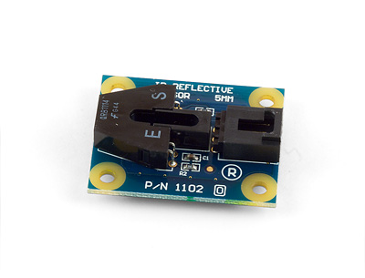
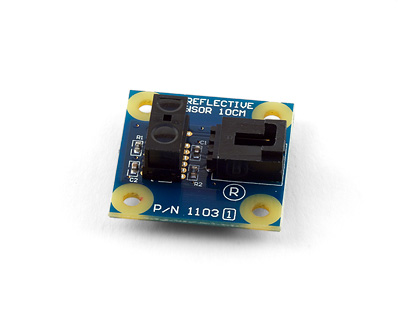
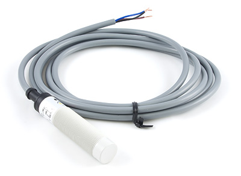
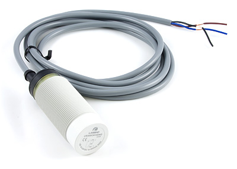
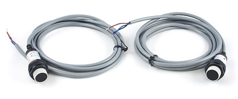
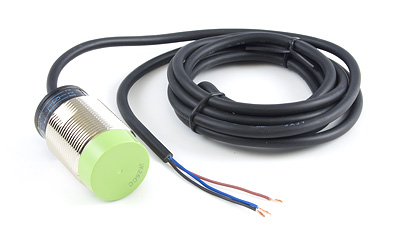
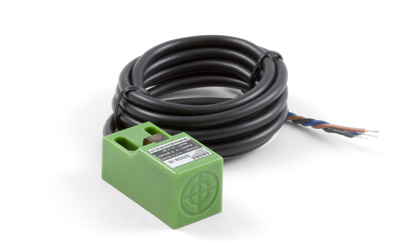
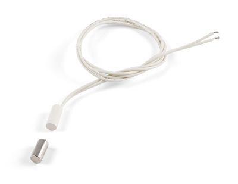
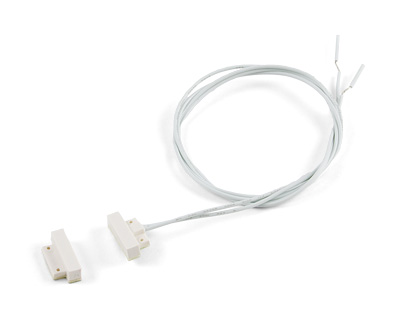

IR Reflective Sensor 5mm

Product Features
With a range of 5mm, this IR proximity sensor can detect opaque objects and connects to an analog input.
Product Description
This sensor uses infrared technology to detect an object at 5mm by determining the difference between low reflective conditions (i.e. black) and high reflective conditions (i.e. white).
The sensor consists of an infrared emitting diode and an NPN silicon phototransistor mounted side by side on a converging optical axis in a black plastic housing. The phototransistor responds to radiation from the emitting diode only when a reflective object passes within its field of view. The area of the optimum response approximates a circle 5mm in diameter.
IR Reflective Sensor 10cm

Product Features
This IR proximity sensor can detect opaque objects within 10cm and connects to an analog input.
Product Description
This sensor can detect the presence of objects at a distance of 0 to 10cm regardless of the object reflective properties. When an object enters the range of detection, SensorValue becomes zero, and when it leaves, it returns to 1000. The 1103 works just as well in both dim and well lit environments.
The sensor cannot detect the presence of the object if it is emitting large amounts of light, such as a light bulb.
Capacitive Proximity Sensor - 8mm

Product Features
This capacitive sensor can detect metals and some other materials within 8mm and behaves like a switch that connects to a digital input.
Product Description
This capacitive proximity sensor is used for non-contact detection of metallic and non-metallic objects such as liquid, powder and granular materials; it can also detect materials through glass or plastic walls.
Note that the standard detecting distance is based on a standard shape approaching the sensor in a standard way. The real detecting distance will vary depending on the shape, thickness and type of material being detected.
You can adjust the operating distance by turning a screw placed on the side of the sensor.
Capacitive Proximity Sensor - 15mm

Product Features
This capacitive sensor can detect metals and some other materials within 15mm and behaves like a switch that connects to a digital input.
Product Description
This capacitive proximity sensor is used for non-contact detection of metallic and non-metallic objects such as liquid, powder and granular materials; it can also detect materials through glass or plastic walls.
Note that the standard detecting distance is based on a standard shape approaching the sensor in a standard way. The real detecting distance will vary depending on the shape, thickness and type of material being detected.
You can adjust the operating distance by turning a screw placed on the side of the sensor.
Photoelectric Tripwire Sensor - 10m

Product Features
Like a tripwire, this sensor detects when an opaque object breaks the beam of IR light between the emitter and receiver.
Product Description
The sensor uses the most reliable and accurate style of photoelectric sensing which is the through beam sensor. The sensor comes with an emitter and a receiver. The emitter provides a constant invisible IR (infrared) beam of light to the receiver and detection occurs when an object passing between the two breaks the beam. The photo detection range of the 3525 is up to 10 meters.
A very familiar application of a through beam photoelectric sensor can be found is right in your home. Quite often, a garage door opener has a through beam photoelectric sensor mounted near the floor, across the width of the door. This sensor is making sure nothing is in the path of the door when it is closing.
Inductive Proximity Sensor - 15mm

Product Features
This inductive sensor can detect metallic objects within 15mm and behaves like a switch that connects to a digital input.
Product Description
Proximity sensors are the most common and affordable solution for no-touch object detection. The most commonly-used proximity sensor is the inductive type, which generates an electromagnetic field to sense metal objects passing close to its face. This is usually the easiest sensing technology to apply in applications where the metal object to be detected is within an inch or two of the sensor face.
Note that the standard detecting distance is based on a standard shape approaching the sensor in a standard way. The real detecting distance will vary depending on the shape, thickness and type of metal being detected and will in general be between 70 to 80% of the standard distance.
Inductive Proximity Sensor - 5mm

Product Features
This inductive sensor can detect metallic objects within 5mm and behaves like a switch that connects to a digital input.
Product Description
This inductive proximity sensor will detect the prescence of a metallic object within 5mm of the surface of the sensor. The detection distance may vary slightly depending on the shape, size, and type of metal the object is made of. It can detect through thin, non-metallic materials and has an LED indicator that turns on when the device is powered, and increases in brightness when an object is detected.
Magnetic Contact Switch

Product Features
This magnetic switch can detect magnets within 12mm and connects to a digital input. Magnet included.
Product Description
The 3560 magnetic contact switch is nice and small and is designed for flush or countersink installations.
The switch handles gaps of up to 3/4 inch between the magnet and the switch. The switch will turn the digital input "on" when the magnet is within 3/4" (19 mm) of the switch, and will turn it "off" when the contact is broken by moving the magnet more than 1" away.
Miniature Magnetic Contact Switch

Product Features
This magnetic switch can detect magnets within 12mm and connects to a digital input. Magnet included.
Product Description
The sensor magnetic contact switch is very small and is designed for surface mounted installations.
The switch handles gaps of up to 12mm (1/2 inch) between the magnet and the switch. The switch will turn the digital input "on" when the magnet is within 12mm of the switch, and will turn "off" when the contact is broken by moving the magnet more than 13mm away.
We Provide:
- To be accessible, friendly, and helpful at all times.
- To answer the phone when you call, 24/7/365.
- Reply to your emails and support tickets within 24 hours.
- To provide timely information about new hardware.
- To provide all design documentations.
Please fulfill following request form to get more information!